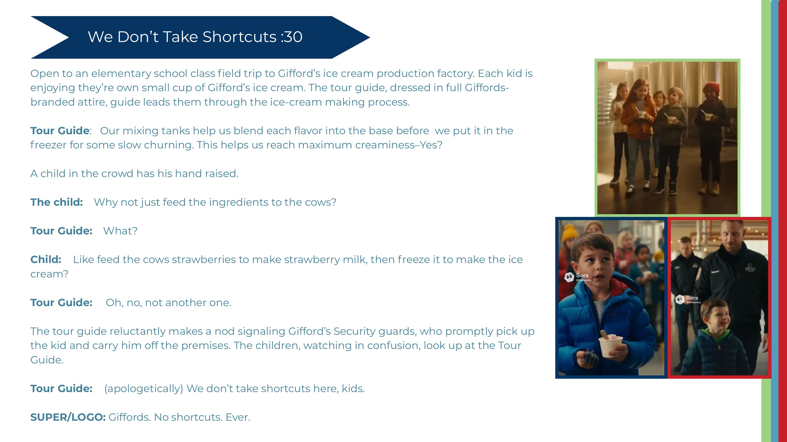
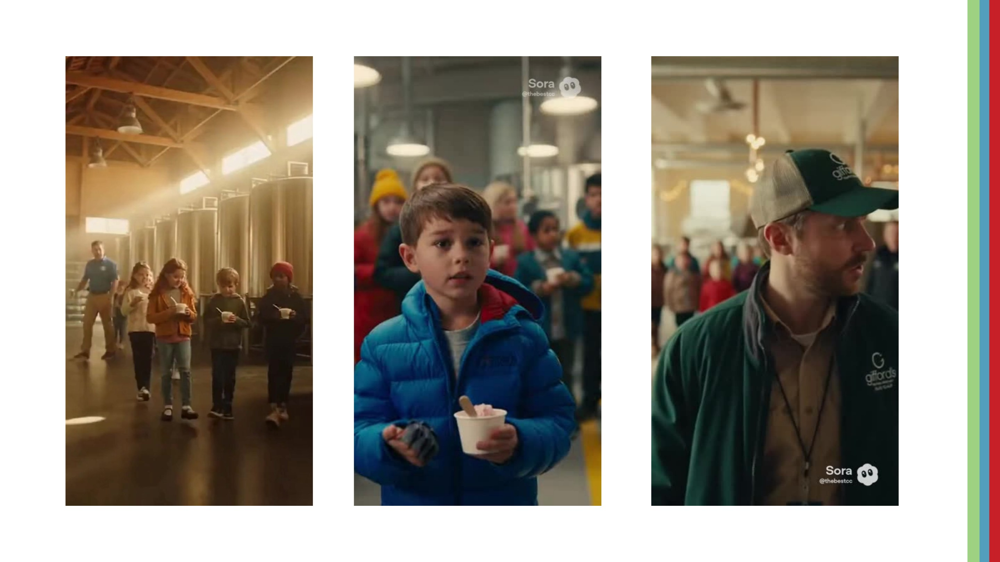

← Campaign archive11 / 14
Film & Copywriting
Gifford’s Famous Ice Cream
A deadpan factory-tour film about the Maine way of doing things.

ClientGifford’s Famous Ice Cream
RoleCopywriter
DisciplinesFilm · Script · Comedy · Brand truth
01 / The brand truth
In Maine, care is ordinary.
Gifford's makes ice cream close to the farms, fields and people behind it. 'No shortcuts' works because it does not feel like a corporate claim—it feels like the local expectation.

02 / The tension
What if someone suggests a shortcut anyway?
A serious factory tour and an elementary-school question create the perfect collision between wholesome craft and absurd efficiency.
03 / The idea
We Don't Take Shortcuts.
A child asks why Gifford's cannot feed strawberries directly to cows and freeze the resulting milk. The exhausted guide signals security: apparently this is not the first shortcut proposal.

04 / The tone
Straight-faced until the final scoop.
The thirty-second script keeps every performance sincere, letting the surreal removal of the child land the brand line: Gifford's. No shortcuts. Ever.
The build
From thought
to touchpoint.
- 30-second film concept
- Finished script
- Comedic direction
- Brand end line
“A product claim becomes memorable when the comedy tests it—and the brand refuses to blink.”